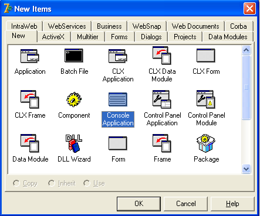
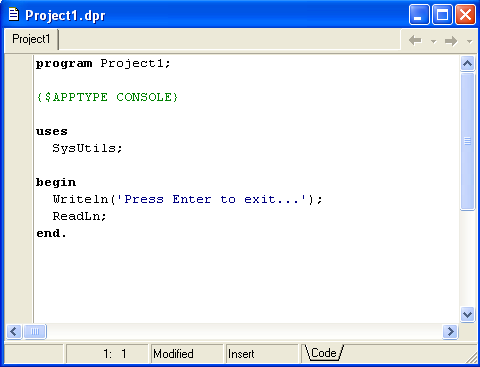
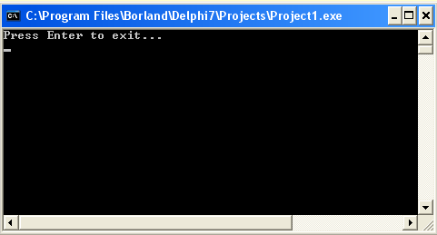

| Тема 2. Консольный ввод и вывод данных Pascal. | ||||||||||
| Назад | ||||||||||
Консольное приложение.Решение самой простой задачи на компьютере не обходится без операций ввода-вывода информации. Ввод данных — это передача данных от внешнего устройства в оперативную память для обработки. Вывод — обратный процесс, когда данные передаются после обработки из оперативной памяти на внешнее устройство. Внешним устройством может служить консоль ввода-вывода (клавиатура и монитор), принтер, гибкий или жесткий диск и другие устройства. Сейчас мы рассмотрим лишь средства консольного ввод-вывода данных. Консоль — это клавиатура плюс монитор. С клавиатуры данные вводятся в программу, а на монитор выводятся результаты ее работы. Консольная модель ввода-вывода, при которой данные представляются потоком символов, не позволяет использовать графических средств. Однако она очень подходит для изучения языка Delphi, так как не загромождает примеры программ излишней информацией о среде и библиотеках программирования. Итак, давайте последовательно создадим консольное приложение: 1. Запустите среду Delphi, выберите в главном меню команду File | Close All, а затем — команду File | New. 2. Выберите “Console Application” и нажмите “OK” (рисунок 2.1).
 Рисунок 2.1. Окно среды Delphi для создания нового проекта
3. В появившемся окне между ключевыми словами BEGIN и END введите следующие строчки (рисунок 2.2):
 Рисунок 2.2. Текст простейшей консольной программы в окне редактора кода
4. Скомпилируйте и выполните эту программу, щелкнув на пункте Run | Run главного меню среды Delphi. На экране появится черное окно (рисунок 2.3), в левом верхнем углу которого будет содержаться текст "Press ENTER to exit..." ("Нажмите клавишу Enter ...").
 Рисунок 2.3. Окно работающей консольной программы
5. Нажмите в этом окне клавишу Enter — консольное приложение завершится. Теперь, когда есть основа для проверки изучаемого материала, рассмотрим операторы консольного ввода-вывода. К ним относятся Write, Writeln, Read, Readln. Консольный выводИнструкции Write и Writeln служат для вывода чисел, символов, строк и булевских значений на экран. Они имеют следующий формат:
где Y1, Y2,..., Yn — константы, переменные и результаты выражений. Инструкция Writeln аналогична Write, но после своего выполнения переводит курсор в начало следующей строки. Если инструкции Write и Writeln записаны без параметров:
то это вызывает пропуск на экране соответственно одной позиции и одной строки. Консольный вводИнструкции ввода обеспечивают ввод числовых данных, символов, строк для последующей обработки в программе. Формат их прост:
где X1, X2, ..., Xn — переменные, для которых осуществляется ввод значений. Пример:
Если одна инструкция вводит несколько значений:
то все эти значения надо набрать на клавиатуре, отделяя одно значение от другого пробелом, и нажать клавишу Enter. Если вводится одно значение:
то его следует набрать и нажать клавишу Enter. С этого момента программа может обрабатывать введенное значение в соответствии с алгоритмом решаемой задачи. Инструкция Readln отличается от Read только одним свойством: каждое выполнение инструкции Readln переводит курсор в начало новой строки, а после выполнения Read курсор остается в той же строке, где и был (потренеруйтесь — и вы быстро поймете разницу). В простейшем случае в инструкциях Read и Readln параметры можно вообще не указывать:
Оба этих оператора останавливают выполнение программы до нажатия клавиши Enter.
|
||||||||||
| Конспект подготовлен Бакулиным А. М. 2022 год. | ||||||||||